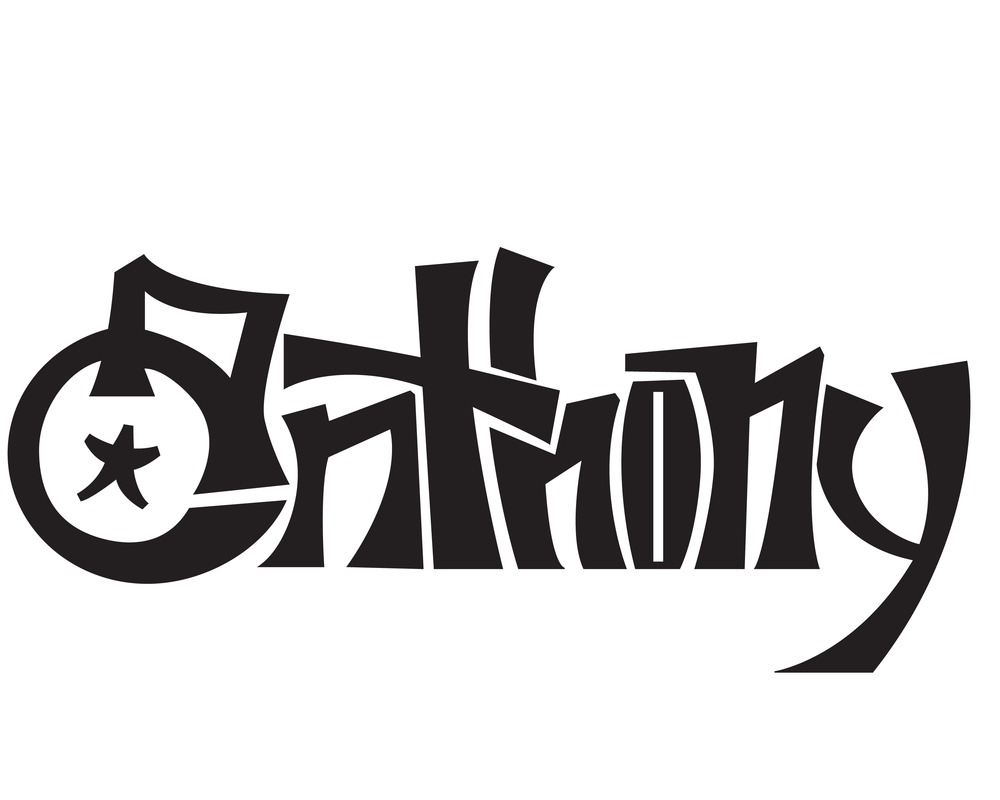
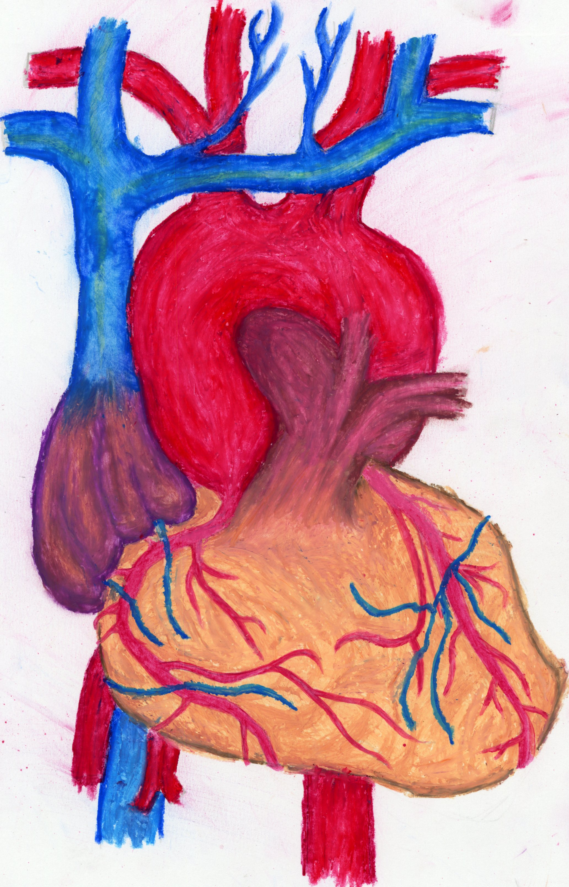
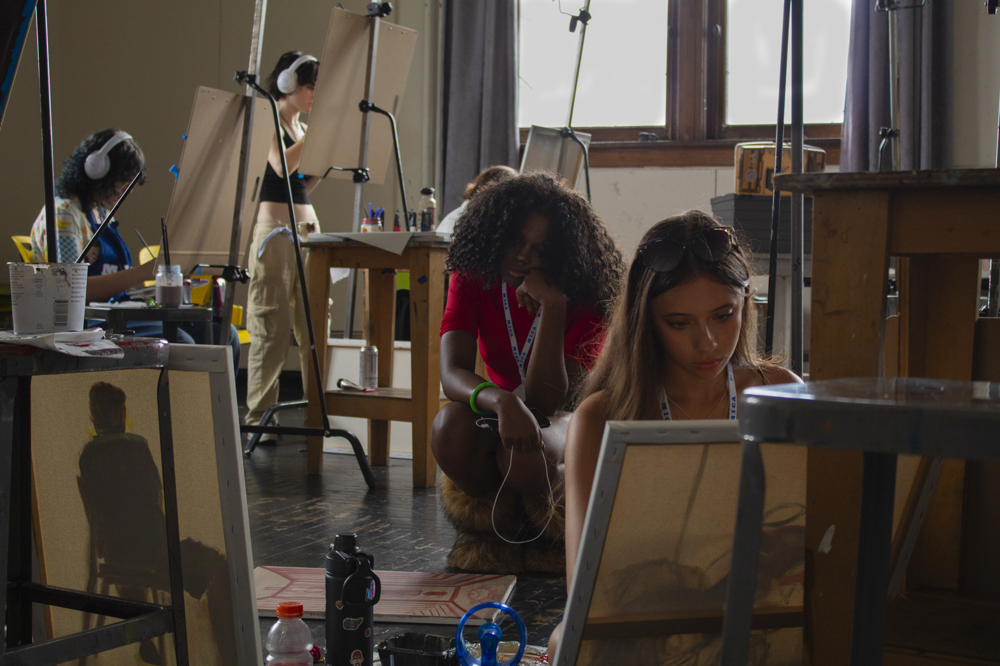
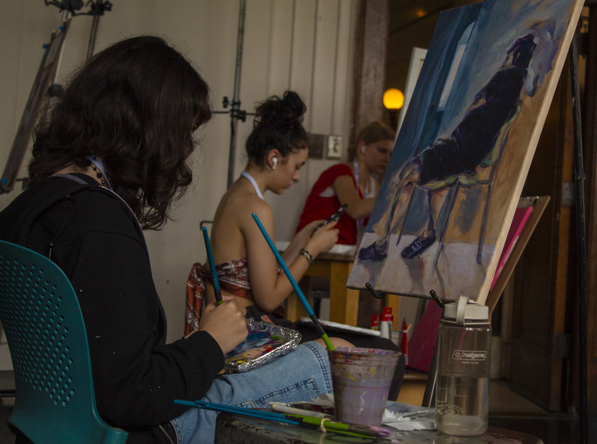
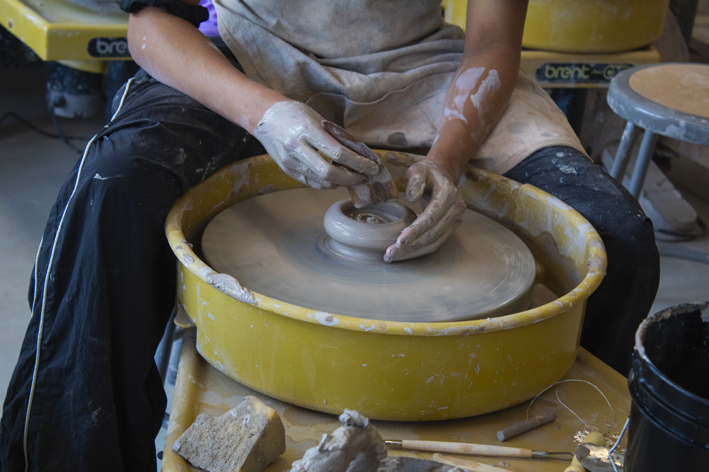
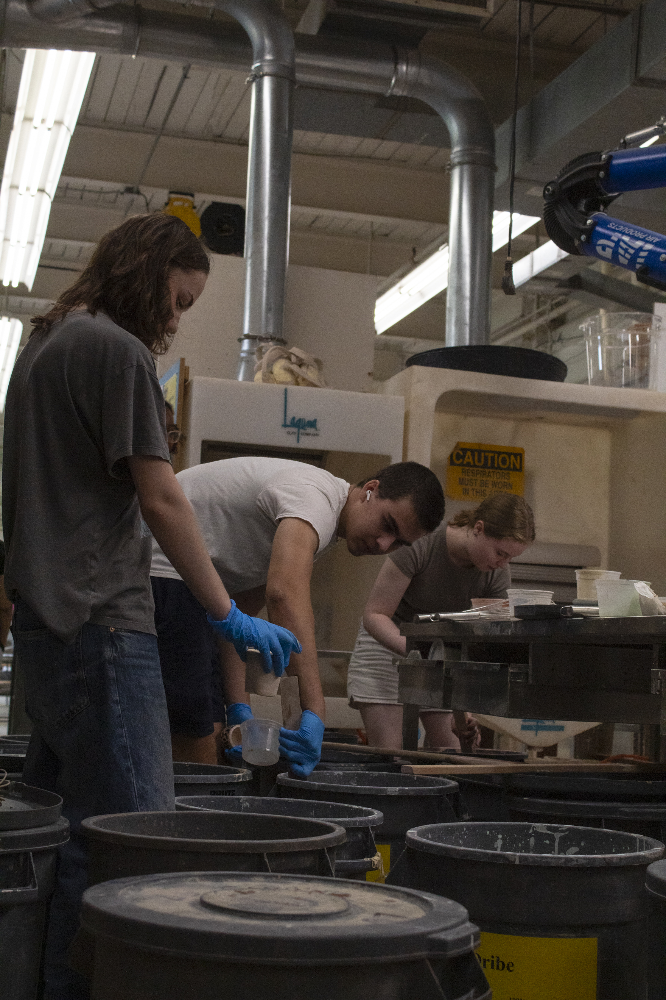
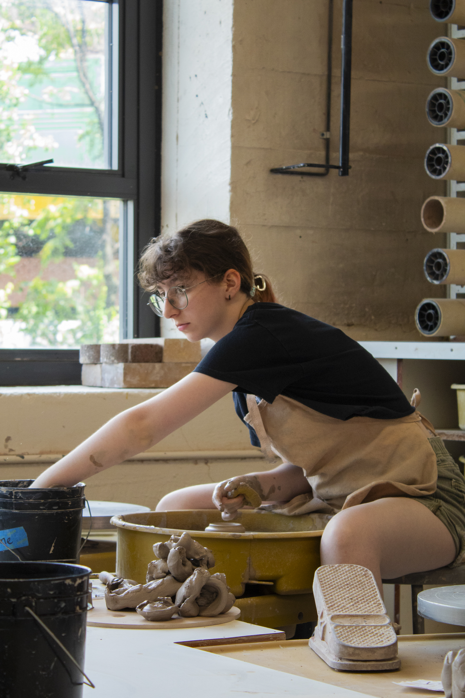
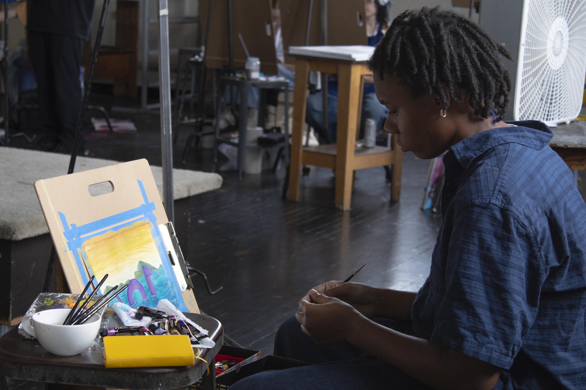

Illustartions and Digital Work
Senior Signature (2025)
My signature is what went into my senior yearbook, it's not a typical signature in script writing but the point of it was to stand out.
Class of 2026 Launch into your Future logo (2026)
This logo is a part of Delaware's "Launch into your Future" initiative which encourages high school seniors to figure out what their plans post-graduation will be. The logo includes stylistic lettering choices, purple to represent my school's colors, as well as a graduation cap.
Traditional Work
Heart Diagram (2026, oil pastels)
This piece of traditional artwork really challeneged my abilities when creating it. I went into the project knowing what I wanted to make but not how, so I decided to experiment with a new medium. Oil pastel is a medium I have played with before but never comitted to a full piece, but the mineral spirits I utilized were completely new and presented a learning curve.
Video Projects
Cab Calloway Communication Arts Commerical (2024)
This video is a commerical for my school's Communication Arts major, and it aims at promoting and encouraging prospective students to join the program. It was a group project to film and interview the students and teacher, but each member took the footage, organized and edited the commerical in their own way. My commerical was the one that was decided to be uploaded to the school's youtube channel, and you can view it there by clicking on the hyperlink.
Visit the video on the school's youtube!
Narrative Project: What Comes to Those who Wait (2025)
This video is my cumulative project for junior year, my narrative film that was written, directed, filmed, edited and casted all by myself. This project challenged me to communicate with actors, coordiante schedules and times for recording, as well as narrowing down writing choices. My script's length was a large complication in my project, as
Visit the video on the school's youtube!
Narrative Project: The Cut (2024)
Photography
Focusing Passion (2025)
This series of pictures were a part of a summer program I attended at the Maryland Institute College of Art, and my final project was centered to the theme of "Passion." The photo on the right hones in on one's concentration when they are doing an action that they are passionate. These two painters are extremely focused and in the zone.
Composing Passion (2025)
This photo is the second in a series of 8, it gets more up close with an artist's workspace and art piece, focusing on their work more prominently than the artist themself.
Sculpting Passion (2025)
This photograph focuses on the sculpting and forming on the wheel. My intentions were to fill the frame with the silhouette of the artist, leaning over their piece and making their artwork.
Coating Passion (2025)
This photo gets low with it's angle to capture the detail of these artists glazing their pieces. My intent was for the audience to have a captivating point of view that immerses them into the environment.

Glazing Passion (2025)
This image gets really close-up with the materials potters use for 'painting' their pieces. The glaze is the coating overtop the bisque fired pottery, sealing and insulating the piece in melted silica, which is what gives it its pigment.

Reclaiming Passion (2025)
This photo shows an artist reaching into the reclaim clay in the ceramics studio. I thought that this captures the different textures involved with making pottery.
Forming Passion (2025)
Contemplating Passion (2025)